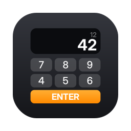

RPN Calculator
Assistance · Support
Contact
Une question, un problème ou une suggestion ? Écrivez à francoismetzler@gmail.com en précisant votre appareil (iPhone, iPad ou Mac) et la version de son système.
Questions fréquentes
Comment faire un calcul en RPN ?
On entre d'abord les nombres, puis l'opération. Pour 3 + 4 : tapez 3, ENTER, 4, puis +. Le résultat 7 s'affiche dans X.
À quoi sert la pile X, Y, Z, T ?
Elle garde les résultats intermédiaires. ENTER fait monter X dans Y ; une opération utilise Y et X, puis la pile redescend.
Comment accéder aux fonctions écrites en orange ?
Appuyez sur 2nd, puis sur la touche voulue.
Comment utiliser les mémoires ?
STO puis un chiffre de 0 à 9 enregistre X ; RCL puis le même chiffre le rappelle.
Comment changer le nombre de décimales ou l'unité d'angle ?
Touchez les pastilles FIX et DEG en haut de l'écran.
Comment copier ou coller un nombre ?
Avec les deux boutons en haut à droite, par un appui long sur l'afficheur, ou avec ⌘C et ⌘V sur Mac et iPad avec clavier.
Contact
A question, a problem or a suggestion? Write to francoismetzler@gmail.com and mention your device (iPhone, iPad or Mac) and its system version.
Frequently asked questions
How do I calculate in RPN?
Enter the numbers first, then the operation. For 3 + 4: type 3, ENTER, 4, then +. The result 7 appears in X.
What is the X, Y, Z, T stack for?
It keeps intermediate results. ENTER pushes X up into Y; an operation uses Y and X, then the stack drops.
How do I use the functions shown in orange?
Press 2nd, then the key.
How do I use the memories?
STO followed by a digit from 0 to 9 stores X; RCL followed by the same digit recalls it.
How do I change the number of decimals or the angle unit?
Tap the FIX and DEG chips at the top of the screen.
How do I copy or paste a number?
Use the two buttons at the top right, long-press the display, or press ⌘C and ⌘V on Mac and on iPad with a keyboard.